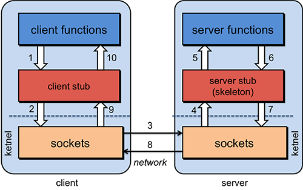
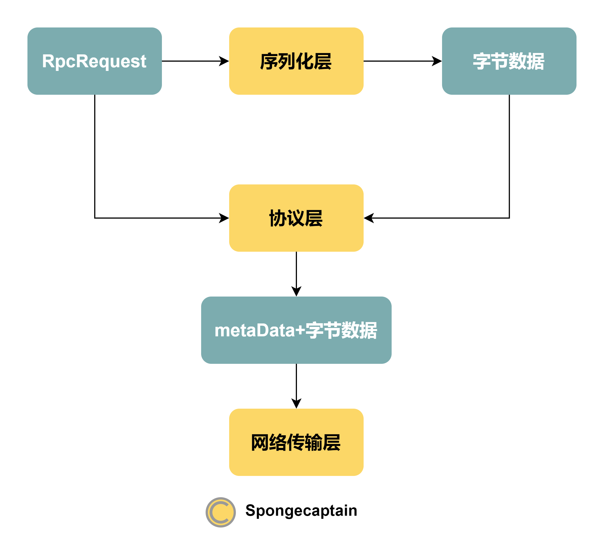
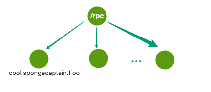
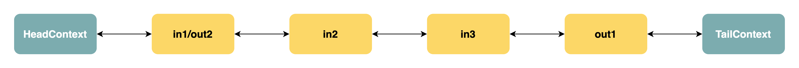

我的 RPC 框架设计
文章目录
个人项目地址：https://github.com/Spongecaptain/RPCFramework，欢迎 star&fork。
1. 什么是 RPC 框架？
现代后端系统需要向上提供众多 API，为了简化系统、去耦合，提出了分布式应用。然而，分布式应用的各个子系统并不是完全独立的，它们需要进行相互通信。为了实现系统间通信，我们有两种手段：
- RPC
- Message Queue
当我们讨论 RPC 时，通常会强调其如下几个特性：
- 隐藏网络通信过程（或者将其称为良好的封装性）：RPC 需要将方法调用对应的消息包从一个主机传递到另一个主机，因此涉及到了网络通信过程。然而，RPC 暴露的接口需要完全隐藏网络传输过程，即在调用者看来，RPC 调用与普通方法调用没有区别。
- 同步性：在面向对象语言中，方法调用栈通常时同步入栈出栈的，即直到方法通过 return 返回指向结果，方法才会出栈。虽然没有任何标准要求 RPC 一定要实现同步性，但最常见的 RPC 就是同步调用的；
RPC 与 REST 的区别？
RPC 与 REST 最大的区别就在于 RPC 提供了更好的抽象，RPC 甚至将网络传输细节彻底隐藏了，而 REST 没有。具体来说，REST 至少要求用于提供 URL 以及请求参数，而 RPC 隐藏了与网络传输的相关实现细节。另一方面，RPC 可以基于任何网络通信协议，而 REST 通常基于 HTTP（或者 HTTPS）协议。RPC 调用者并不会关心具体的协议是：HTTP、TCP 还是其他任何自定义协议。
RPC 内部结构如下图所示：

2. 一个 RPC 框架需要什么？
RPC 框架可以很复杂，例如 Apache Dubbo，其提供了非常多的功能，不过 RPC 框架的核心为如下几个：
- 代理层：RPC 接口向上暴露一个普通的方法调用，但是其内部却隐藏了复杂的序列化、协议解析、网络传输等过程。代理层就可以完成这样一件事：隐藏复杂实现细节，对外暴露一个简单的 API；
- 序列化层：RPC 中通过网络来完成消息传递，例如调用具体哪个接口的哪个方法，方法入口参数是什么。我们无法直接传输面向对象世界中的类与对象，因此需要序列化层将它们转换为字节数据来进行传输；
- 协议层：协议层的存在是基于 TCP 层开发自定义通信协议的内在要求。由于 TCP 协议不一定按照应用层的数据分包来传递，存在所谓的"TCP 粘包”、“TCP 拆包” 现象，而自定义协议的目的就是为了解决 TCP 的这些问题；总之，协议层主要为 TCP 传输的数据包提供元数据；
- 服务注册层：当分布式应用的主机数达到一定规模后，主机的下线以及上线将非常频繁。服务注册层能够很好地起到集群元数据信息中转站的作用，当客户端通过代理层进行 RPC 调用时，能够通过读取服务注册层的注册信息来得知哪个服务器能够提供此 RPC 调用对应的服务；
- 网络传输层：网络传输层对应于第一节 RPC 内部结构图的 sockets 层，其负责网络数据的传输，其需要负责 TCP 连接的管理、TCP 数据包的编解码等工作；
下面将按照框架各个层进行展开说明。
2.1 代理层
代理层的实现策略有多种方式，例如 Dubbo 基于 Spring 容器在加载 Bean 时为接口实例织入网络传输 RPC 调用请求包的逻辑。当然，不借助于 Spring 容器，我们也能够实现代理逻辑，例如借助于 CGLIB、Javassist 等代理框架实现动态代理。
本项目基于 CGLIB 实现动态代理逻辑，代理层完成如下逻辑：
- 将接口的方法调用抽象为：接口完全限定名、方法名、方法入口参数类型、方法实际的入口参数，并将这些数据封装为 RpcRequest 实例；
- 将 RpcRequest 通过 NettyRpcClient 进行网络传输；
2.2 序列化层
Java 的序列化框架有非常多的选择，甚至你可以使用自定义的序列化框架。良好的 RPC 框架对序列化框架需要考虑非常多的因素，例如：
- 序列化效率；
- 序列化协议的向前以及向后兼容性；
- 跨语言性：各个语言的方法栈不同，如果分布式集群涉及由不同语言写成的组件，那么跨语言将是非常重要的一个特性；
出于简单易用的目的，本项目选择 Kryo，而没有详细考虑上述因素。
关于 Kryo 的序列化实现，不妨直接查看本项目 cool.spongecaptain.serialize.kyro 包下的 KryoSerialization 类的具体实现。
2.3 协议层
协议层是必要的，试想这样一个问题：客户端连续发送了两个 RpcRequest 消息，而且在接收端同时接收到了这两个 RpcRequest 实例对应的序列化后的字节数据，那么：接收端如何将该字节数组数据解析为两个 RpcRequest 实例呢？如果没有协议层，接收端将无法完成此任务。当然，对于服务端向客户端回复的响应 RpcReponse 实例也有着完全一样的道理。
关于协议层起到的作用，我们可以用下图来表示（以 RpcRequest 为例）：

metaData 是 TCP 数据包的元数据，本项目中设计为由如下字段组成：
- Magic Number：魔数，用于说明此 TCP 数据包为 RPC 请求，用于向消息接收方说明消息类型；
- versionNumber：协议版本号；
- serializaitonID：序列化号，用于支持序列化协议扩展；
- commandID：命令号 ID，用于支持多命令扩展；
- dataLength：数据长度，用于说明 RpcRequest 或者 RequestResponse 序列化后的字节数据长度，以解决所谓 “TCP 分包”、“TCP 粘包” 问题；
协议层基于 Netty 框架实现，其涉及到的类为：cool.spongecaptain.transport.codec 包下的 ByteDecoder 以及 MessageEncoder 类。
2.4 服务注册层
Dubbo 中使用 ZooKeeper 服务中心如下图所示：

我将上述注册中心模型进行简化（我们没有必要如此复杂），如下图所示：

在根节点 /rpc 下的每一个节点都是服务节点：
- 节点的 path：一个接口的完全限定名，例如图中的 cool.spongecaptain.Foo 接口；
- 节点的 data：能够提供此接口的服务的服务器地址，例如 localhost:2222，如果有多个，那么使用逗号
,隔开；
注册中心能够提供的功能有：
- Provider 能够向注册、更新、删除中心注册其能够提供的服务；
- Consumer 能够从注册中心获取其所需的服务，并在服务被增删改时得到提醒；
本项目服务注册中心的具体实现可以参考：cool.spongecaptain.registry.zk 包下的若干类：CuratorUtil、ZKServiceDiscovery、ZKServiceRegistry。
2.5 网络传输层
网络传输层非常关键，因为网络 I/O 的设计最大程度上影响 RPC 调用效率。
本项目将 Netty 作为网络传输层的底层框架，具体实现类集中于 cool.spongecaptain.transport 包下。理解 Netty 编程的重点之一便是理解其事件管道驱动模型。本项目的 Netty 管道模型如下图所示：

注意，无论是 Netty 客户端，还是 Netty 服务端，它们的管道都如上图所示地设计，只不过具体 ChannelHandler 的类型有所区别：
Netty 客户端：
- in1/out1：IdleStateHandler 用于长时间未通信后的 TCP 关闭；
- in2：ByteDecoder 负责将 ByteBuf 转换为 RPCResponse 实例；
- in3：RpcResponseHandler 负责 RpcResponse 的处理，包括服务端对 request 中指定方法的调用；
- out1：MessageEncoder RPCRequest 转为 ByteBuf 后向前传播；
Netty 服务端：
- in1/out1：用于长时间未通信后的 TCP 关闭；
- in2：Decoder 负责将 ByteBuf 的字节数据转换为 RpcRequest 实例；
- in3：RPCRequestHandler 负责处理 RpcRequest 对应的 RPC 方法，执行后产生对应的 RPCResponse 实例返回；
- out1：Encoder 负责将 RPCResponse 转换为 ByteBuf，然后再向前传播；
值得一提的是：Netty 服务端在 I/O 线程中调用 RPC 消息指定的方法，因此其拥有一个默认假设：方法执行并不会导致阻塞或者长耗时。否则，应当使用一个异步线程池专门负责 RPC 对应方法的执行。
而对于 Netty 客户端也有一点需要注意：由于 Netty 的异步网络 I/O，但 RPC 接口试图向上暴露一个同步调用逻辑，所以其利用 CompletableFuture 来完成将异步网络传输转换为同步调用。
3. 展望
1.使用 Spring 容器来完成代理逻辑的封装
本项目目前使用 CGLIB 代理的方式向 Consumer 提供 RPC 调用服务。如果想要更彻底的抽象（即想把代理逻辑也封装掉），那么可以使用 Spring 容器来完成这件事，具体来说可以参考自己的博文 Spring XML schema 扩展机制 来完成这一实现。另一方面，Spring 容器在框架组件有非常多可选项时，能够提供非常方便的依赖注入功能。
2.添加负载均衡层
通常，一个 RPC 调用对应服务能够由多个服务器提供，因此需要提供负载均衡来负责实现每一个服务器处理相同规模的 RPC 请求处理。
负载均衡的策略有多种形式：完全随机、权重随机、轮询、最少活跃数优先以及一致性 Hash。